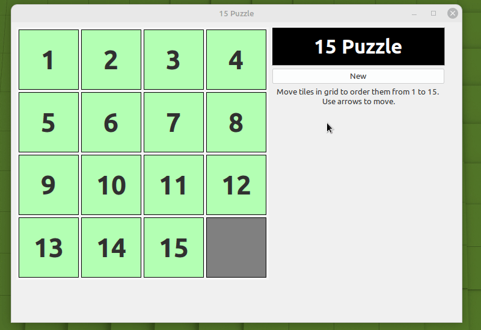
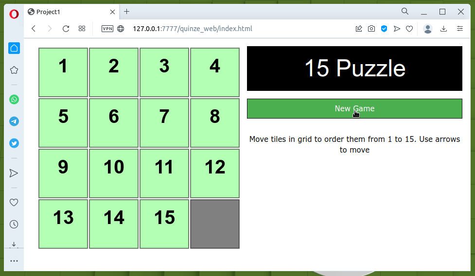

15 Puzzle
O objetivo aqui foi criar uma aplicação para desktop e tentar recriá-la para web, vendo o que seria possível reaproveitar. Poderia ter reaproveitado mais coisas mas, é só um exemplo.
Escolhi um quebra cabeças que fosse simples de implementar. Optei pelo 15 Puzzle (ou jogo do 15).
A versão para desktop ficou assim:

e a versão para web ficou assim:

Acho que ficou semelhante o suficiente para um teste.
TL;DR;
Fonte do projeto no github.
HTML
1 2 3 4 5 6 7 8 9 10 11 12 13 14 15 16 17 18 19 20 21 22 23 24 25 26 27 28 29 | |
Não tem muito mistério. Basicamente um canvas na linha 13 para o desenho do tabuleiro e um botão na linha 19 para novo jogo.
Desktop vs Navegador
Basicamente é necessário separar o desenho da janela, do tabuleiro e
alguns detalhes referente ao movimento conforme as teclas
pressionadas. A lógica principal do jogo foi reutilizada. Por falta de
um nome melhor, coloquei no arquivo fifteenengine.pas. Para
trabalhar com as diferenças entre desktop e navegador na hora da
compilação, basta um {$IFDEF/IFNNDEF BROWSER}.
Programa comum
fifteenengine.pas
1 2 3 4 5 6 7 8 9 10 11 12 13 14 15 16 17 18 19 20 21 22 23 24 25 26 27 28 29 30 31 32 33 34 35 36 37 38 39 40 41 42 43 44 45 46 47 48 49 50 51 52 53 54 55 56 57 58 59 60 61 62 63 64 65 66 67 68 69 70 71 72 73 74 75 76 77 78 79 80 81 82 83 84 85 86 87 88 89 90 91 92 93 94 95 96 97 98 99 100 101 102 103 104 105 106 107 108 109 110 111 112 113 114 115 116 117 118 119 120 121 122 123 124 125 126 127 128 129 130 131 132 133 134 135 136 137 138 139 140 141 | |
Nas linhas de 19 a 25, definem as teclas com os mesmos nomes (valores
quaisquer pois não fui procurar) da definidas em LCLTypeque não pode
ser incluída e as cores desejadas para peças no local correto, errado
e branco que serve para a movimentação.
De 32 a 36 um record que indica o número e as coordenadas. Poderia ser
um TPoint mas fica assim.
A linha 39 é o tabuleiro. Algumas versões utilizam matrizes
bidimensionais. Resolvi usar uma lista pois achei mais práticas
algumas operações. E as próprias coordenadas definidas no record da
linha 32 facilitam as coisas. A variável Blank da linha 40 serve
para indicar onde está o quadro vazio para servir na movimentação.
De 42 a 44 os procedimentos utilizados para o jogo.
Procedure SetBlank
Apenas ajusta a posição do espaço em branco.
BoardInit
Inicializa o tabuleiro com as peças de 1 a 15 em sequência e tendo o quadro 16 em branco para a movimentação. As coordenadas das peças são ajustadas de 0..3 para x e 0..3 para y.
IsSolvable
Quando as peças são embaralhadas, é necessário saber se o resultado tem solução. Você pode ver maiores detalhes sobre a rotina para verificar se existe uma solução para o arranjo atual aqui.
Shuffle
Bem, uma rotina para embaralhar as peças no tabuleiro. Se a posição resultante não tiver solução, embaralha novamente até conseguir uma posição válida.
CanMove
Verifica se o movimento escolhido pelo jogador é válido, isto é, se existe uma peça que possa ser movida na direção escolhida. Se o local em branco estiver na última coluna do tabuleiro, não é possível move uma peça da direita para esquerda (pressionamento de seta para esquerda).
DoMove
Executa um movimento válido.
Era isso. Nem ficou muito grande com as 141 linhas de código (contando as linhas em branco).
Diferenças
As maiores diferenças foram as rotinas para desenhar o tabuleiro e para a manipulação da tecla pressionada. Vou mostrar apenas as rotinas utilizadas para a interação com a página do navegador.
OnFormKeyPress
48 49 50 51 52 53 54 55 56 57 58 59 60 61 62 | |
DrawBoard
Responsável pelo desenho do estado atual do tabuleiro na tela. Os comandos necessários para desenhar em um canvas de uma página e para desenhar em uma janela são totalmente diferentes. Até poderia ter feito uma rotina comum. Fica para a próxima.
34 35 36 37 38 39 40 41 42 43 44 45 46 47 48 49 50 51 52 53 54 55 56 57 58 59 60 61 62 | |
A linha 45 inicia o desenho da pastilha. Se o quadro for vazio, desenha e vai para a próxima coordenada. Se o número está na posição correta, desenha em verde e se estiver na posição errada desenha em vermelho.
Integração com a página
26 27 28 | |
No uses apenas foi incluído o fifteenengine para a lógica do jogo.
26 27 28 29 30 31 32 33 34 35 36 37 38 39 40 41 | |
As linhas 28 e 20 associam o botão com a função que deverá ser executada por ocasião do pressionamento.
As linhas 30 a 37 inicializam o canvas e o contexto para o desenho.
A linha 38 o pressionamento de uma tecla com o procedimento
OnFormKeyPress.
E era isso. Para programas mais complexos, as coisas não serão tão simples. Mas fica a dúvida da necessidade de uma versão desktop e navegador do mesmo programa.
Existe espaço para melhorias como:
- Mostrar uma mensagem quando o jogador terminar (todas as peças nos respectivos lugar).
- Mostrar o número de jogadas efetuadas.
- Ajustar o tamnho do canvas e o desenho do tabuleiro quando a janela for redimensionada.
- Animação do movimento.
- Etc..